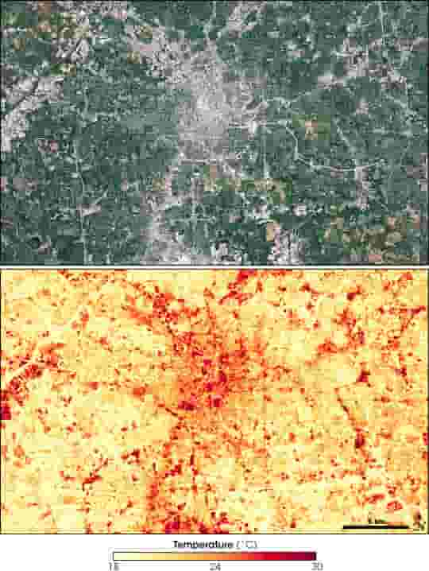
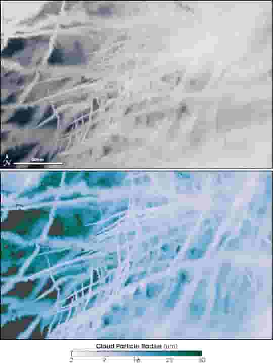
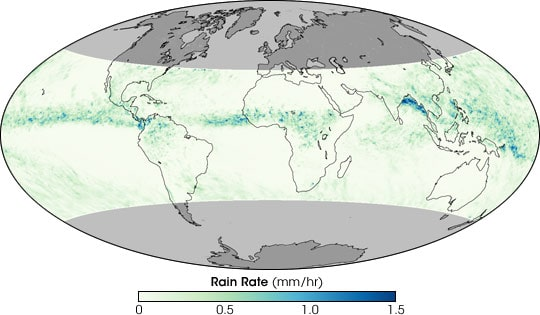

Building Blocks of the Urban Jungle:
The Essential Materials Shaping Our Cities and Future
Modern society relies on the mass production of various man-made materials to function effectively. The development and maintenance of cities, in particular, are intrinsically linked to four fundamental materials: cement, steel, plastics, and ammonia. These materials serve as the backbone of modern civilization, and their significance in urban development cannot be overstated.
Cement
Cement is a crucial building block for modern cities. When combined with sand, gravel, and water, it forms concrete, a material that is used extensively in the construction of buildings, bridges, tunnels, roads, dams, runways, and ports. In fact, modern cities are practically embodiments of concrete. China, in particular, is a major player in cement production, accounting for more than half of the world's cement output. This demand continues to rise as cities expand and infrastructures require constant maintenance and expansion.
Steel
Steel, renowned for its strength, durability, and versatility, is a dominant material in modern civilization. It is the most widely used metal and plays a role in countless visible and invisible components of our urban landscape, from skyscrapers to surgical scalpels. Moreover, it is an essential material in manufacturing, shaping, and distributing other metallic and non-metallic products. For example, the automotive industry relies heavily on steel, with the average car containing approximately 900 kilograms of it. The transportation sector, in general, relies on steel for its operations, with almost all modes of mass transportation depending on it.
Plastic
Plastics have infiltrated nearly every aspect of modern life, including our cities. They are used in a wide range of applications, from the keys on our computers to the upholstery on our office chairs. Plastics are indispensable in healthcare, especially in hospitals, where they are used for medical equipment, including flexible tubes, catheters, intravenous containers, blood bags, and sterile packaging. The ease with which plastics can be molded into various shapes makes them a go-to material for many lightweight yet durable uses.
Ammonia
While perhaps less visible than cement, steel, or plastics, ammonia is arguably the most important of the four materials. Its synthesis is the basis for all nitrogen fertilizers, which are vital for global agriculture. Without ammonia-based fertilizers, it would be impossible to feed nearly half of the world's population. In China, for example, three out of every five people depend on the synthesis of ammonia for their food. Thus, ammonia synthesis is regarded as one of the most significant technological advancements in history, as it ensures the survival of billions.
The Interdependence and Environmental Impact
These four materials share common characteristics: they are not easily replaceable by other materials, their demand is expected to increase, and their mass-scale production relies heavily on the combustion of fossil fuels. This interdependence makes decarbonization of these materials a significant challenge. To produce these materials without relying on fossil fuels, alternative processes would need to be developed and scaled up.
Furthermore, in the context of growing urbanization and the transition to renewable energies, these materials will continue to play a crucial role. For example, the production of wind turbines and electric cars is highly dependent on steel, plastics, and other materials, adding to the demand for these essential resources.


